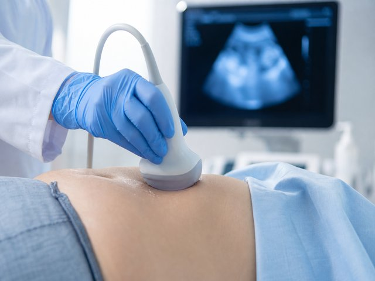
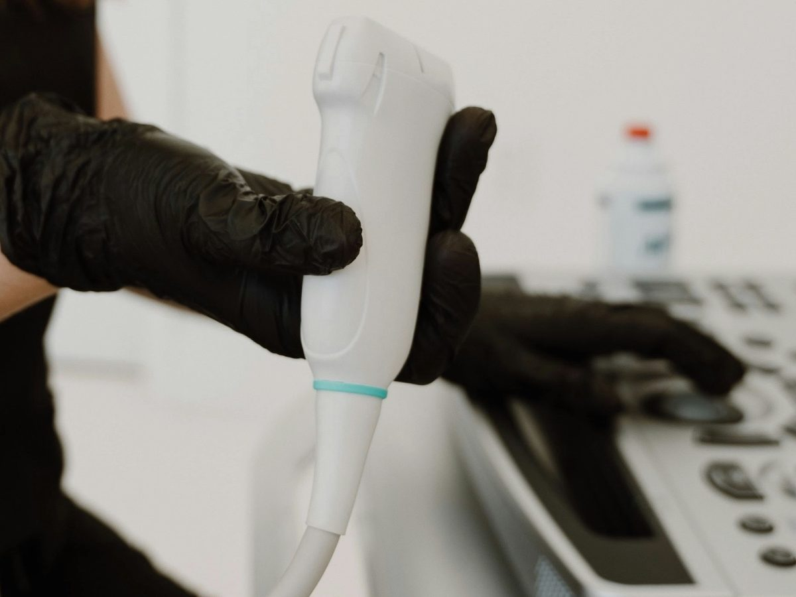
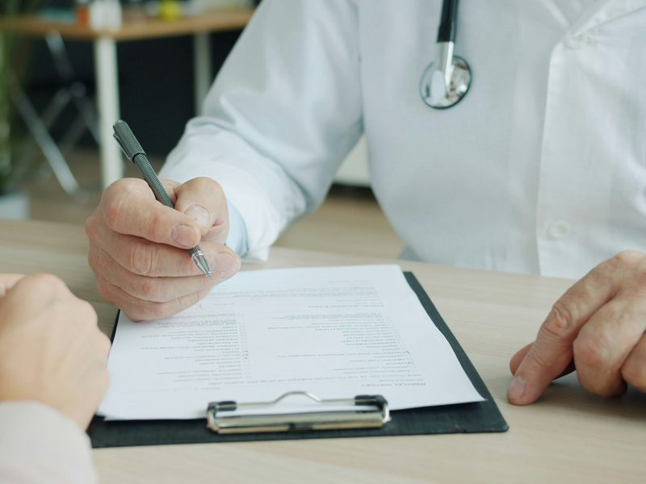
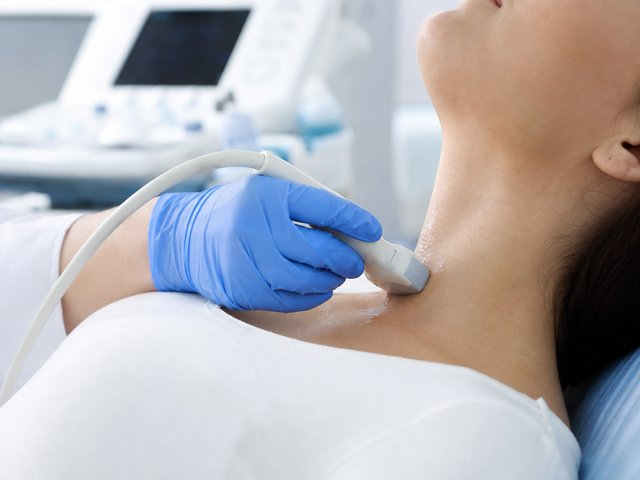
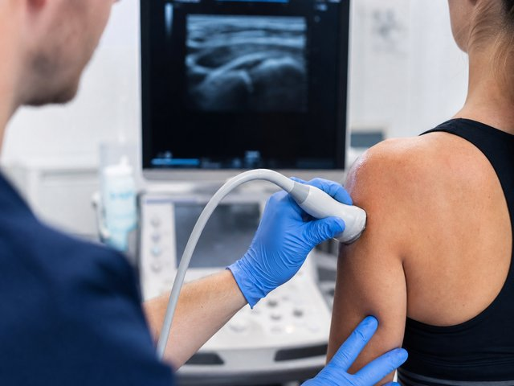
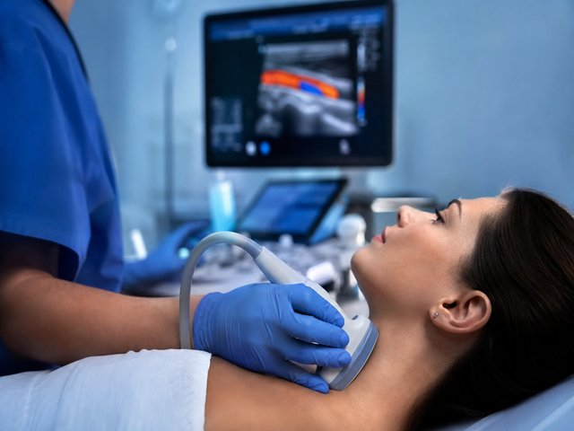

Addome e apparato urinario
Fegato, colecisti, pancreas, reni, vescica e vie urinarie.
Scopri di più →Medico radiologo
Dr. Salvatore Susino. Ecografie diagnostiche, ascolto attento e referti spiegati con parole semplici.
Esami su appuntamento nello studio in centro, facilmente raggiungibile da Modica, Ispica e Scicli. Referto e immagini vengono consegnati al termine della visita.


Ogni ecografia viene eseguita personalmente dal Dr. Salvatore Susino. Al termine si riceve il referto e una spiegazione comprensibile di quanto osservato.
Conosci il medicoPer gli esami più richiesti: quando servono, come ci si prepara, come si svolgono.

Fegato, colecisti, pancreas, reni, vescica e vie urinarie.
Scopri di più →


Per chi non può venire in studio: Ecografie a domicilio →
Il Dr. Salvatore Susino è medico radiologo. Si occupa soprattutto di ecografia clinica e ogni referto viene spiegato con parole semplici.
In centro, in Via dell'Arno 34.
Lo studio si trova presso Arcobaleno Dentisti, in Via dell'Arno 34 a Pozzallo.
Orari: lunedì – venerdì, 9:00 – 12:30 e 15:00 – 19:00. Si riceve su appuntamento.
Per chi arriva da fuori Pozzallo: Indicazioni da Modica, Ispica, Scicli e Ragusa.
Se l’esperienza è stata positiva, una recensione aiuta altri pazienti a trovarci.
Lasciare una recensione su Google →